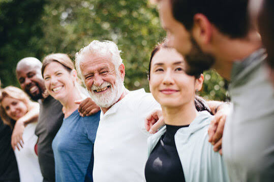

Actions de terrain et projets éco-citoyens menés par nos bénévoles.

L'Association Bénévolat & Solidarité (ABS) est une organisation à but non lucratif
qui propose des activités éducatives, environnementales et culturelles.
Elle a pour but de promouvoir le partage de connaissances, le soutien scolaire
et l'entraide intergénérationnelle au niveau local.
